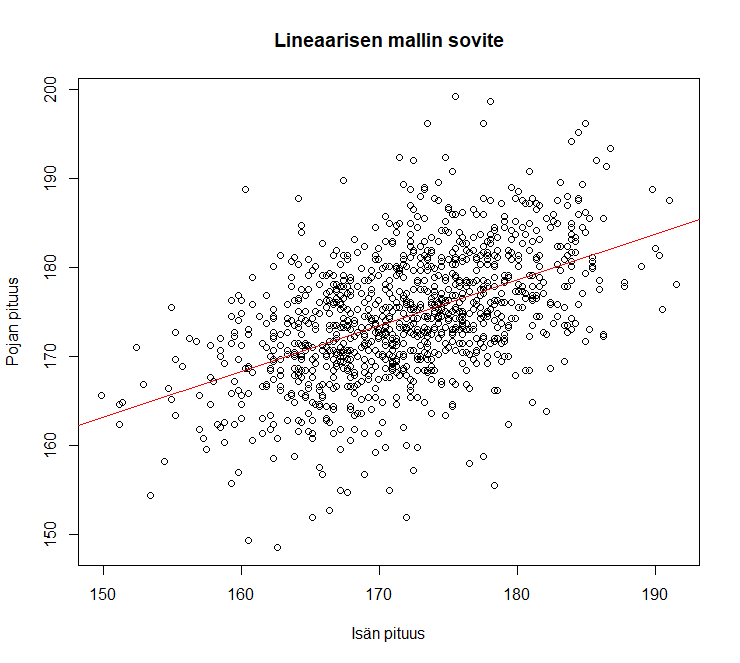

13 Regressioanalyysi
Tilastollinen riippuvuus ja korrelaatio -jakson laajennuksena pyrimme tässä luvussa vastaamaan seuraavaan kysymykseen:
Miten jonkin selitettävän muuttujan tilastollista riippuvuutta joistakin toisista selittäviksi muuttujiksi kutsutuista muuttujista voidaan mallintaa?
Muuttujien välisten riippuvuuksien, eli erilaisten tosielämän ilmiöiden välisten yhteyksien, analysointi on tavallisesti keskeinen kysymys tieteellisessä tutkimuksessa.
Regressioanalyysi on yksi tunnetuimpia ja eniten sovellettuja tilastollisia menetelmiä kuvaamaan kahden muuttujan tilastollista riippuvuutta. Jos tilastoaineistossa on havaittavissa säännönmukaisuutta ja muuttujien välillä näyttäisi olevan järkevä (asialooginen) yhteys, niin päästään “malliajatteluun”. Ts. pyritään rakentamaan tilastollista mallia ko. aineistolle, mikä valitun kriteeristön perusteella parhaiten kuvaa analysoitavaa aineistoa..
13.1 Johdatus regressioanalyysin ideaan
Regressioanalyysi pyrkii havaintoaineiston perusteella mallintamaan tilastoyksikköjen tilastollisten muuttujien välistä riippuvuutta.
Selitettävä ja selittävät muuttujat
Regressiomallissa tilastollisia muuttujia on kahdenlaisia: selitettävä muuttuja, jonka tilastollista vaihtelua pyritään selittämään selittävän muuttujan, tai selittävien muuttujien, avulla.
Toisin sanoen, pyritään erottamaan se selitettävän muuttujan arvojen vaihtelu, joka voidaan selittää selittävän muuttujan (selittävien muuttujien) arvojen vaihtelulla siitä vaihtelusta, joka on täysin satunnaista. Jälleen on siis kysymys signaalista ja kohinasta!
Esimerkiksi voitaisiin tutkia selittääkö vaaleissa puolueiden/ehdokkaiden vaalimainontabudjetti heidän äänimääriään, ja jos selittää, niin kuinka suuren osan äänimääristä?
Jos tilastollisesti merkitsevä osa selitettävän muuttujan havaittujen arvojen vaihtelusta voidaan selittää selittävien muuttujien arvojen vaihtelun avulla, sanomme, että selitettävä muuttuja riippuu tilastollisesti merkitsevästi selittäjinä käytetyistä muuttujista.
Yleisemmin regressioanalyysi pyrkii vastaamaan seuraaviin kysymyksiin koskien tilastollisten muuttujien välistä riippuvuutta:
- Muuttujien välisten riippuvuuksien kuvaaminen. Millainen on riippuvuuden muoto (kuten lineaarinen vai epälineaarinen)? Kuinka voimakasta riippuvuus on?
- Muuttujien välisten riippuvuuksien selittäminen. Tilastollisen riippuvuuden luonteen kuvaaminen ja tiivistäminen.
- Selitettävän muuttujan käyttäytymisen ennustaminen.
Lineaarinen regressioanalyysi (teknisesti) rajoittuu muuttujien lineaaristen riippuvuuksien kuvaamiseen. Kuitenkin, laajemmin asiaa pohdittaessa, lineaaristen regressiomallien suuri käyttökelpoisuus muuttujien välisten riippuvuuksien tilastollisessa analyysissa perustuu (ainakin) seuraaviin seikkoihin:
- Lineaarisella regressiomallilla voidaan ajoittain kohtuullisella tarkkuudella approksimoida (siis jossain määrin, malli on toki virheellinen) epälineaarisiakin muuttujien välisiä riippuvuuksia.
- Muuttujien välinen epälineaarinen riippuvuus voidaan usein myös linearisoida käyttäen sopivia muunnoksia alkuperäisiin muuttujiin.
- Epälineaariset regressiomallit muodostavat oman tilastollisten (regressio)mallien luokkansa (joita ei käsitellä tarkemmin vielä tällä kurssilla, mutta kylläkin myöhemmissä tilastotieteen opinnoissa).
Regressiomalleja käytetään apuvälineinä monilla tilastotieteen osa-alueilla. Esimerkkejä regressiomallien käyttökohteista tilastotieteessä:
- Varianssianalyysi
- Koesuunnittelu
- Biometria/biostatistiikka
- Aikasarja-analyysi ja ennustaminen
- Ekonometria
Regressioanalyysissa sovellettavat tilastolliset mallit voidaan luokitella usealla eri periaatteella.
- Luokittelu regressiomallin funktionaalisen muodon mukaan:
- Lineaariset regressiomallit
- Epälineaariset regressiomallit
- Luokittelu regressiomallin yhtälöiden lukumäärän mukaan:
- Yhden yhtälön regressiomallit
- Moniyhtälömallit
Yhden selittäjän lin. malli Tällä kurssilla käsitellään seuraavaksi käytännössä vain yhden selittäjän lineaarista regressiomallia. Myöhemmin esitellään kuitenkin lyhyesti minkälaisia laajennuksia tälle regressioanalyysin perustilanteelle tyypillisesti hyödynnetään tilastollisissa analyyseissä.
13.2 Yhden selittäjän lineaarinen regressiomalli
Yhden selittäjän lineaarinen regressiomalli pyrkii selittämään selitettävän muuttujan havaittujen arvojen vaihtelua yhden selittävän muuttujan havaittujen arvojen vaihtelun avulla. Se on siis yksinkertaisin esimerkki yhden selittäjän lineaarisista regressiomalleista, sillä se sisältää vain yhden selittävän muuttujan useamman sijaan.
- Selitettävää muuttujaa kutsutaan usein myös vastemuuttujaksi, vasteeksi, riippuvaksi muuttujaksi tai tulosmuuttujaksi
- Vastaavasti selittävää muuttujaa kutsutaan ajoittain myös selittäjäksi, riippumattomaksi muuttujaksi tai ennustavaksi muuttujaksi.
Tässä luvussa tarkastellaan lyhyesti ja tiivistetysti seuraavia yhden selittävän muuttujan lineaarisen regressiomallin soveltamiseen liittyviä kysymyksiä:
- Miten malli formuloidaan?
- Mitkä ovat mallin osat ja mitkä ovat osien tulkinnat?
- Mitkä ovat mallia koskevat tavanomaiset oletukset?
- Miten mallin parametrit estimoidaan?
- Miten mallin parametreja koskevia hypoteeseja testataan?
- Miten mallin hyvyyttä mitataan?
- Miten mallilla ennustetaan?
Oletetaan, että selitettävän muuttujan (Y) havaittujen arvojen vaihtelua halutaan selittää selittävän muuttujan eli selittäjän (x) havaittujen arvojen vaihtelun avulla. Tulkitaan selittävä muuttuja tässä kohtaa kiinteäksi eli sen arvot oletetaan tunnetuksi.
- Kyseinen muuttuja voidaan myös tulkita satunnaismuuttujana eikä seuraavat tarkastelut muutu ratkaisevasti tämän seurauksena.
Tehdään siis seuraavat oletukset:
- Selitettävä muuttuja \(Y\) on suhdeasteikollinen satunnaismuuttuja.
- Selittävä muuttuja \(x\) on kiinteä eli ei-satunnainen muuttuja.
Olkoot \(y_1, y_2,\ldots, y_n\) selitettävän muuttujan \(Y\) ja \(x_1, x_2, \ldots, x_n\) selittävän muuttujan \(x\) havaittuja arvoja. Oletetaan lisäksi, että havaintoarvot \(x_i\) ja \(y_i\) liittyvät samaan havaintoyksikköön kaikille \(i=1, 2, \ldots, n\), eli tarkastellaan havaintopareja \((x_i,y_i)\).
- Matemaattisemmin tämä tarkoittaa sitä, että tällöin havaintoarvot muodostavat pisteitä 2-ulotteisessa avaruudessa \((x_i, y_i)\).
Yhden selittäjän lineaarinen regressiomalli. Oletetaan, että havaintoarvojen \(y_i\) ja \(x_i\) välillä on lineaarinen tilastollinen riippuvuus, joka voidaan ilmaista yhtälöllä \[\begin{equation*} Y_i = \beta_0 + \beta_1 x_i + \varepsilon_i, \quad i=1,\ldots, n. \end{equation*}\] Tämä yhtälö määrittelee yhden selittäjän lineaarisen regressiomallin, jossa
- \(y_i\) on selitettävän satunnaismuuttujan \(Y_i\) havaittu arvo havaintoyksikölle \(i\).
- \(x_i\) selittävän muuttujan eli selittäjän \(x\) ei-satunnainen ja havaittu arvo havaintoyksikölle \(i\).
- \(\varepsilon_i\) on virhetermi ja sen satunnainen ja ei-havaittu arvo havaintoyksikölle (i). Se vastaa siitä osuudesta sm:jan \(Y_i\) satunnaisvaihtelusta mitä mallin systeemaattinen osa \(\beta_0 + \beta_1 x_i\) ei kykene mallintamaan.
Yhden selittäjän lineaarisen regressiomallin regressiokertoimista:
\(\beta_0\) on ei-satunnainen ja tuntematon vakio, ja sitä kutsutaan vakioselittäjän regressiokertoimeksi. Nimitys johtuu siitä, että kerrointa \(\beta_0\) vastaa keinotekoinen selittäjä, joka saa kaikille havaintoyksiköille \(i=1, 2, \ldots, n\) vakioarvon 1. Tämä lisätään malliin olennaisesti aina (ellei ole jotain todella erityisiä syitä toimia toisin).
- Huomautus: Jatkossa esitettävät kaavat eivät välttämättä päde esitettävässä muodossa, jos mallissa ei ole vakiota (vakioselittäjää), joka yleensä automaattisesti lisätään aina mukaan malliin.
\(\beta_1\) on ei-satunnainen ja tuntematon vakio, ja siis selittäjään \(x\) liittyvä regressiokerroin, jota kutsutaan ajoittain myös kulmakertoimeksi (se määrittelee regressiosuoran kulmakertoimen).
- Huomautus: Huomaa, että regressiokertoimet \(\beta_0\) ja \(\beta_1\) on oletettu samoiksi kaikille havaintoyksiköille \(i\).
Regressiokerroin
Regressiokertoimella tarkoitetaan tilastollisen mallin (lopulta aineiston perusteella estimoidun) parametrin arvoa, joka ilmaisee selittävän muuttujan ja vastemuuttujan välisen suhteen voimakkuuden regressiomallissa. Kertoimen tulkinta vaihtelee sen mukaan, onko vastemuuttuja jatkuva muuttuja (kuten yllä lineaarisessa regressiomallissa), binäärinen tai ajoittain myös osuus (logistinen regressio) tai esimerkiksi lukumäärä (Poisson-regressio).
Regressiokerroin kuvaa, kuinka paljon ja mihin suuntaan selittävän muuttujan muutos vaikuttaa vastemuuttujaan.
Esimerkiksi lineaarisessa regressiossa (kuten edellä) lopulta estimoitu regressiokerroin \(\widehat{\beta}_1\) kertoo, kuinka paljon vastemuuttujan arvo muuttuu, kun selittävä muuttuja \(x\) kasvaa yhdellä yksiköllä, pitäen muut muuttujat vakiona (=ennallaan). Yhden selittäjän tapauksessa tämä toteutuu tietysti automaattisesti.
Logistisessa regressiossa (binääriselle vastemuuttujalle) kerroin kuvaa todennäköisyyden muutosta, kun taas Poisson-regressiossa se kuvaa odotettujen tapahtumien lukumäärän muutosta.
Keskustellaan hetken aikaa virhetermin \(\varepsilon_i\) roolista. Havaintoyksikkökohtaisista (huom riippuvat indeksistä \(i\)!) virhetermeistä \(\varepsilon_i\) tehdään oletuksia, jotka liittyvät tilastollisen mallin rakentamiseen. Ns. standardioletukset ovat seuraavat:
- \(\mathsf{E}(\varepsilon_i) = 0, \, i=1,2,\ldots,n\).
- Virhetermeillä on vakiovarianssi eli ne ovat homoskedastisia: \(\mathsf{Var}(\varepsilon_i)= \sigma^2, \, i=1,\ldots,n\). Virhetermien \(\varepsilon_i\) tässä yhteiseksi oletettua varianssia kutsutaan ajoittain jäännösvarianssiksi.
- Virhetermit ovat korreloimattomia: \(\mathsf{Cov}(\varepsilon_i, \varepsilon_l)=0, \, i \neq l\), eli niiden välinen kovarianssi on siis 0.
- Lisäksi ajoittain tehdään normaalisuusoletus eli että virhetermit ovat normaalisti jakautuneita: \(\varepsilon_i \thicksim \text{N}(0, \sigma^2), \, i=1,2,\ldots,n\).
Huomautus: Oletus (iv) sisältää oletukset (i) ja (ii) (tämä liittyy normaalijakauman ominaisuuksiin)
Oletus (i) on keskeisin. Sen sijaan kaikki oletukset (ii)–(iv) eivät ole (yhdessä) välttämättömiä ja melko usein eri tilastotieteen osa-alueilla ja sovelluksissa virhetermistä tehdään vähemmän tai lievempiä oletuksia mitä (ii)–(iv) olettavat.
Regressioanalyysille voidaan esittää kaksi asialoogisesti varsin erilaista lähtökohtaa, joilla on kuitenkin myös monia yhtymäkohtia:
- Ongelmat determinististen mallien (ks. aiempi keskustelu determinististen ja stokastisten mallien välillä) sovittamisessa havaintoihin: Havainnoille esitetty malli ei sovi täsmällisesti kaikkiin havaintoihin. Tämä onkin osaltaan tilastollisen mallinnuksen yksi ominaispiirteistä: Täydellistä sopivuutta aineiston kanssa ei käytännössä koskaan saavuteta tavanomaisen lineaarisen mallin avulla.
- Tavoitteena on tarkemmin ottaen moniulotteisen todennäköisyysjakauman regressiofunktion parametrien estimointi. Vaikka moniulotteisten todennäköisyysjakaumien regressiofunktiot ovat yleisesti epälineaarisia, lineaariset regressiomallit muodostavat tärkeän ja paljon sovelletun malliluokan.
Parametrien estimointi
Koska regressiokertoimet \(\beta_0\) ja \(\beta_1\) sekä jäännösvarianssi \(\sigma^2\) ovat (tavallisesti) tuntemattomia, niiden arvot on estimoitava muuttujien \(x\) ja \(Y\) havaittuja arvoja \(x_i\) ja \(y_i\), \(i=1,2, \ldots, n,\) käyttäen.
Lineaaristen regressiomallien parametrien estimointiin käytetään tavallisesti pienimmän neliösumman (PNS) menetelmää. Tämän estimointimenetelmän tarkemmat yksityiskohdat ovat myöhempien tilastotieteen kurssien asioita. Seuraavassa kuitenkin muutamia yksityiskohtia mihin PNS-menetelmä perustuu yhden selittäjän tapauksessa.
PNS-menetelmässä edellä esitellyn yhden selittäjän lineaarisen regressiomallin regressiokertoimien \(\beta_0\) ja \(\beta_1\) estimaattorit määrätään minimoimalla virhetermien \(\varepsilon_i\) neliösummaa \[\begin{equation*} S(\beta_0,\beta_1) = \sum_{i=1}^{n} \varepsilon^2_i = \sum_{i=1}^{n} (y_i - \beta_0 - \beta_1 x_i)^2 \end{equation*}\] regressiokertoimien \(\beta_0\) ja \(\beta_1\) suhteen.
- Tämä minimointi tapahtuu tavanomaiseen tapaan derivoimalla funktio \(S(\beta_0,\beta_1)\) kertoimien \(\beta_0\) ja \(\beta_1\) suhteen ja merkitsemällä derivaatat nolliksi: \[\begin{eqnarray*} \frac{\partial S(\beta_0,\beta_1)}{\partial \beta_0} &= -2 \sum_{i=1}^{n} (y_i - \beta_0 - \beta_1 x_i) = 0 \\ \frac{\partial S(\beta_0,\beta_1)}{\partial \beta_1} &= -2 \sum_{i=1}^{n} (y_i - \beta_0 - \beta_1 x_i) x_i = 0. \end{eqnarray*}\] Nämä ns. normaaliyhtälöt johtavat lopulta pienen sieventämisen jälkeen regressiokertoimien \(\beta_0\) ja \(\beta_1\) pienimmän neliösumman (PNS-) estimaattoreihin ja lopulta käytännössä analysoitavasta aineistosta laskettaviin PNS-estimaatteihin \[\begin{eqnarray*} \widehat{\beta}_0 &=& \bar{y} - \widehat{\beta}_1 \bar{x}, \qquad \mathrm{ja} \\ \widehat{\beta}_1 &=& \frac{s_{xy}}{s^2_x} = r_{xy} \frac{s_y}{s_x}, \end{eqnarray*}\] josta nähdään yhteys aiemmin Osassa I esiteltyihin \(x\):n ja \(y\):n otoskeskiarvoihin, otoskeskihajontoihin sekä otoskovarianssiin ja otoskorrelaatiokertoimeen \(x\):n ja \(y\):n välillä.
PNS-estimaatit \(\widehat{\beta}_0\) ja \(\widehat{\beta}_1\) määrittelevät suoran (matemaattisesti katsoen) kaksiulotteisessa avaruudessa: \[\begin{equation*} \widehat{y}_i = \widehat{\beta}_0 + \widehat{\beta}_1 x_i, \end{equation*}\] jossa
- \(\widehat{\beta}_0\) on estimoidun regressiosuoran ja pistekuvion y-akselin leikkauspiste
- \(\widehat{\beta}_1\) on estimoidun regressiosuoran kulmakerroin
Sovitteet - Tämän estimoidun suoran tuottamat arvot \(\widehat{y}_i\) ovat käytännössä eri havainnoille \(y_i\) saatavat sovitteet (\(i=1,...,n\)) valittuun lineaariseen malliin perustuen. Näiden perusteella voidaan osaltaan tehdä estimoidusta mallista tulkintoja ja tutkia myös mallin sopivuutta aineistoon.
Estimoidun mallin tulkintoja
Tarkastellaan estimoidun (yhden selittäjän) lineaarisen mallin seurauksia. Sijoitetaan regressiokertoimien \(\beta_0\) ja \(\beta_1\) PNS-estimaattoreiden lausekkeet estimoidun regressiosuoran lausekkeeseen. Tällöin estimoidun regressiosuoran yhtälö voidaan kirjoittaa muodossa: \[\begin{equation*} \widehat{y}_i = \bar{y} + r_{xy} \, \frac{s_y}{s_x} (x_i-\bar{x}) \end{equation*}\] Yhtälöstä nähdään, että estimoitu regressiosuora kulkee havaintopisteiden \((x_i , y_i), i = 1,2, \ldots, n,\) painopisteen kautta. Voidaan siis nähdä, että estimoidulla regressiosuoralla on seuraavat ominaisuudet:
- Jos \(r_{xy} > 0\), suora on nouseva.
- Jos \(r_{xy} < 0\), suora on laskeva.
- Jos \(r_{xy} = 0\), suora on vaakasuorassa.
- Suora jyrkkenee (loivenee), jos
- korrelaation itseisarvo \(|r_{xy}|\) kasvaa (pienenee)
- keskihajonta \(s_y\) kasvaa (pienenee)
- keskihajonta \(s_x\) pienenee (kasvaa)
Residuaalit Tarkastellaan vielä estimoituun lineaariseen malliin liittyviä residuaaleja, jotka saadaan havaintojen ja sovitteiden erotuksena \[\begin{equation*} \widehat{\varepsilon}_i = y_i - \widehat{y}_i = y_i - \widehat{\beta}_0 - \widehat{\beta}_1 x_i, \quad i=1,2,\ldots,n. \end{equation*}\]
Sovite on estimoidun regressiosuoran yhtälön selitettävälle muuttujalle antama arvo havaintopisteessä \(x_i\). Vastaavasti residuaali on selitettävän muuttujan havaitun arvon \(y_i\) ja sovitteen \(\widehat{y}_i\) eli estimoidun regressiosuoran yhtälön selitettävälle muuttujalle havaintopisteessä \(x_i\) antaman arvon erotus.
Estimoitu regressiomalli selittää selitettävän muuttujan havaittujen arvojen vaihtelua sitä paremmin mitä lähempänä estimoidun mallin sovitteet \(\widehat{y}_i\) ovat selitettävän muuttujan havaittuja arvoja \(y_i\). Yhtäpitävästi estimoitu regressiomalli selittää selitettävän muuttujan havaittujen arvojen \(y_i\) vaihtelua sitä paremmin mitä lähempänä nollaa estimoidun mallin residuaalit \(\widehat{\varepsilon}_i\) ovat.
Selittäjän til. merkitsevyys Selittäjän tilastollinen merkitsevyys. Yhden selittäjän lineaarisessa mallissa erityisen mielenkiinnon kohteena on (ks. esim. ylläolevat tulkinnat) testata nollahypoteesin \[\begin{equation*} H_0:\beta_1=0 \end{equation*}\] paikkansa pitävyyttä. Tätä hypoteesia voidaan testata ns. t-testillä, mikä perustuu mm. R:n tai RStudion tuottamiin t-arvoihin (“t values”), jotka saadaan kertoimen \(\beta_1\) estimaatin \(\widehat{\beta}_1\) ja sen keskivirheen (eli estimoidun hajonnan) osamääränä. Jos saatava t-testisuureen arvo on itseisarvoltaan verrattaen suuri, erityisesti itseisarvoltaan suurempi kuin 2, niin ko. tilastollisen testin p-arvo on pienempi kuin 5 %, ja selittäjä \(x\) on täten tilastollisesti merkitsevä selittävä muuttuja 5 % merkitsevyystasolla.
Selitysaste Liittyen vielä estimoidun mallin sopivuuden tarkasteluun, estimoidun regressiomallin hyvyyttä mitataan (tavanomaisesti) mm. selitysasteella \((R^2)\).
- Selitysasteen määritelmä perustuu ns. varianssianalyysihajotelmaan, jossa selitettävän muuttujan havaittujen arvojen vaihtelua kuvaava neliösumma on jaettu kahdeksi neliösummaksi, joista toinen kuvaa mallin ja havaintojen yhteensopivuutta ja toinen mallin ja havaintojen yhteensopimattomuutta.
Selitysaste saa arvoja nollan ja ykkösen väliltä (kun lineaarisessa regressiomallissa on mukana vakiotermi).
Arvo 0 tarkoittaa, että malli (yhden selittäjän mallissa käytännössä siis selittäjä \(x\)) ei selitä \(y\):n lineaarista vaihtelua yhtään (yli vakiotermin). Ts. määritelty malli ei ollenkaan selitä selitettävän muuttujan havaittujen arvojen vaihtelua.
Vastaavasti arvo \(R^2 = 1\) tarkoittaa, että malli sopii täydellisesti aineistoon. Ts. selitysaste mittaa lineaarisen regressiomallin selittämää osuutta selitettävän muuttujan havaittujen arvojen kokonaisvaihtelusta.
Korkea selitysasteen arvo on siis sinänsä usein toivottava lopputulos lineaarisen mallin käytön yhteydessä. Tämän liian mekaaninen tavoittelu johtaa kuitenkin ajoittain muihin ongelmiin, kuten ylisovittamiseen usean selittäjän lineaarisia malleja käsiteltäessä.
Esimerkki: isän ja pojan pituus, jatkoa. Jatketaan isän (\(x\)) ja heidän poikiensa (\(y\)) pituutta koskevan aineiston tarkastelua (ks. Osa I). Periytyykö isän pituus heidän pojilleen? Käytännössä jo aiemmin tarkastelimme Pearsonin klassista havaintoaineistoa isän ja heidän poikiensa pituuksien muodostamista lukupareista.
Estimoidun regressiosuoran yhtälö on (ks. myös alla oleva kuva) \[\begin{equation*} \widehat{y}_i = 86.09 + 0.514 x_i, \quad i=1,2,...,1078. \end{equation*}\] Suoran kulmakertoimen \(\widehat{\beta}_1\) = 0.514 tulkinta on siis, että jos isä A on 1 cm pitempi kuin isä B, isä A:n poika on keskimäärin 0.514 cm pitempi kuin isä B:n poika.
Ohessa vielä tarkemmin R:n (RStudion) lm-funktion tuottama regressiotulostus:
Coefficients:
Estimate Std. Error t value Pr(>|t|)
(Intercept) 86.08771 4.65555 18.49 <2e-16 ***
Father 0.51401 0.02706 19.00 <2e-16 ***
---
Signif. codes: 0 ‘***’ 0.001 ‘**’ 0.01 ‘*’ 0.05 ‘.’ 0.1 ‘ ’ 1
Residual standard error: 6.193 on 1076 degrees of freedom
Multiple R-squared: 0.2512, Adjusted R-squared: 0.2505
F-statistic: 360.9 on 1 and 1076 DF, p-value: < 2.2e-16Edellä keskusteluihin seikkoihin liittyen nähdään mm. seuraavaa:
Selitysaste (“Multiple R-squared”) on 0.251 eli poikien pituuden lineaarisesta vaihtelusta kyetään selittämään n. 25 % isien pituuden avulla.
Testattaessa isän pituuteen liittyvää regressiokerrointa, eli nollahypoteesia \(H_0:\beta_1=0\), niin saamme t-suhteeksi (t-testisuureeksi) n. 19.00 ja p-arvoksi 0.000 (2e-16 on R:n tapa antaa hyvin pieni luku, olennaisesti siis nolla tässä tapauksessa). Näin ollen voimme kaikilla tyypillisillä tilastollisilla merkitsevyystasoilla \(\alpha\), kuten \(\alpha=0.05\), hylätä tämän nollahypoteesin eli isän pituudella on tilastollisesti merkitsevää informaatiota pojan pituutta koskien.
Huomaa kuitenkin, mitä myös mm. selitysaste kuvaa, että pituuksien välinen suhde ei ole täysin deterministinen vaan aika runsaasti jää kuitenkin vielä satunnaista vaihtelua jäljelle.
Ennusteet Ennusteen muodostaminen. Mainitaan vielä tässä kohtaa ennusteen muodostamisesta. Edellä mallin sovittaminen tarkoittaa, että käytämme kaikkia havaintoja/havaintopareja \((x_i,y_i), \, i=1,...n,\) mallin sovittamiseen (“opettamiseen”). Tämän tuloksena saadaan edellä mainitut sovitteet ja esimerkiksi edeltävän kuvan lineaarisen suoran tässä yhden selittäjän tapauksessa.
Sen sijaan mm. koneoppimisen suosion kasvusta johtuen ennusteilla tarkoitetaan yhä useammin tilastotieteellisessä kirjallisuudessa uusille havainnoille ja/tai tietylle selittävän muuttujan arvolle \(x\) perustuvaa \(y\):n ennustetta. Ts. jos muuttuja \(x\) saa arvon \(x=x^e\), jossa \(x^e\) on jokin x:lle asetettava arvo ennusteen pohjaksi, niin ennuste on tällöin \(\widehat{y}^e = \widehat{\beta}_0 + \widehat{\beta}_1 x^e\).
Ennusteiden muodostusta ja laajempaa roolia tilastollisissa analyyseissä ja tietysti erityisesti ennustamisessa tarkastellaan vielä tulevassa luvussa erikseen, kun tehdään myös mm. ero opetus- ja testiaineiston välille.
13.3 Muita regressiomalleja
Yksinkertaista lineaarista regressiomallia voidaan laajentaa monin tavoin ja monenlaisiin erilaisiin tilanteisiin. Käydään seuraavassa hyvin lyhyesti ja johdantomaisesti läpi muutamia mahdollisia ja tyypillisiä tilanteita.
Usean selittäjän lin. malli Usean selittäjän lineaarinen regressiomalli: yhden selittäjän sijaan käytetään useita selittäviä muuttujia.
Esimerkki. Jos haluamme mallintaa opiskelijan arvosanaa (olisi tässä siis vastemuuttuja \(Y_i\)), voimme ottaa huomioon paitsi opiskelutunnit, mutta myös unen määrän, stressitason ja aiemmat suoritukset. Malli näyttäisi tässä tapauksessa tältä (vrt. yhden selittäjän tapaus): \[\begin{equation*} \mathrm{arvosana}_i = \beta_0 + \beta_1 \times \mathrm{opiskelutunnit}_i + \beta_2 \times \mathrm{uni}_i + \beta_3 \times \mathrm{stressi}_i + \beta_4 \times \mathrm{aiemmat\, arvosanat}_i + \varepsilon_i. \end{equation*}\]
Epälineaarinen regressiomalli Lineaarisen mallin sijaan malli voi olla myös epälineaarinen.
Esimerkki. Logistinen kasvukäyrämalli on esimerkki epälineaarisesta mallista. Se voidaan esittää seuraavassa muodossa: \[\begin{equation*} Y_i = \frac{a}{1 + \exp(-k(t_i - t_0))} + \varepsilon_i, \end{equation*}\] jossa
- \(Y_i\) on opiskelijan arvosana (vaste),
- \(t_i\) on opiskelijan käyttämä opiskeluaika (esimerkiksi tuntia viikossa),
- \(a\) on vasteen maksimiarvo (esimerkiksi 10),
- \(k\) on kasvun jyrkkyyttä säätelevä parametri,
- \(t_0\) on kohta, jossa kasvu on nopeinta,
- \(\varepsilon_i\) on satunnaisvirhe, joka kuvaa lineaarisen mallin tapaan mallin ulkopuolista vaihtelua.
Tämä malli on epälineaarinen muotonsa eli parametrien suhteen. Se kuvaa tilannetta, jossa vaste kasvaa nopeasti alussa, mutta lähestyy ylärajaa \(a\) asymptoottisesti. Malli soveltuu hyvin tilanteisiin, joissa vasteen kasvu hidastuu resurssien lisääntyessä, kuten oppimisen tai esimerkiksi esim. biologisen kasvun yhteydessä.
Erityisen tärkeitä yhden selittäjän lineaarisen mallin laajennuksia ilmenee kun vastemuuttuja on muuta muotoa mitä edellä oletetaan lineaarisissa regressiomalleissa, joissa käytännössä oletetaan että vaste on suhdeasteíkollinen muuttuja, kuten jokin reaaliluku. Vaste voi hyvin olla myös diskreettiarvoinen, kuten binäärinen \(Y_i=0\) tai \(Y_i=1\) tai lukumäärä \(Y_i \in {0,1,2,3,\ldots}\)
Logistinen regressio Mikäli vaste on binäärinen, niin tällöin tyypillinen tarkasteltava ja täsmennettävä tilastollinen malli on logistinen regressiomalli (tunnetaan myös logistisena regressiona tai logit-mallina).
Esimerkki logistisesta regressiosta. Kuvitellaan, että haluamme ennustaa, onnistuuko työnhakija saamaan työpaikan. Meillä on tietoa hakijan koulutuksesta, työkokemuksesta ja siitä, onko hän osallistunut työhaastatteluun. Vastemuuttuja \(Y_i\) on binäärinen: Työnhakija \(i\) sai työpaikan (eli \(y_i=1\)) tai ei saanut (\(y_i=0\)). Logistinen regressiomalli voisi tällöin olla \[\begin{equation*} \mathrm{logit}(p_i) = \log \Big(\frac{p_i}{1-p_i}\Big) = \beta_0 + \beta_1 \times \mathrm{koulutus}_i + \beta_2 \times \mathrm{kokemus}_i + \beta_3 \times \mathrm{haastattelu}_i, \quad i=1,...,n, \end{equation*}\] jossa \(\mathrm{logit}(p_i)\) tarkoittaa siis logaritmista suhdetta työpaikan saamistodennäköisyyden \(p_i\) ja sen vastatodennäköisyyden \(1-p_i\) välillä eli sen todennäköisyyden kesken, että hakija ei saa työpaikkaa. Mallin avulla voimme arvioida, kuinka todennäköistä on, että hakija saa työpaikan, kun tiedämme hänen taustatekijänsä eli mallin sovitteena saadaan todennäköisyyksiä \(\widehat{p}_i\), jotka ovat tunnetusti nollan ja yhden välillä. Tämä on erittäin hyödyllistä esimerkiksi rekrytointiprosessien kehittämisessä tai koulutuksen vaikuttavuuden arvioinnissa.
Huomaa eroavaisuudet lineaariseen malliin! Ts. mitä tapahtuu malliyhtälön vasemmalla puolella eikä myöskään mitään erillistä virhetermiä ilmene malliyhtälön oikealla puolella.
Kaikki tarkemmat yksityiskohdat ovat tämän kurssin ulkopuolella.
Poisson-regressio Jos vaste on lukumäärä, niin tällöin yksi mahdollinen malliluokka on ns. Poisson-regressiomalli. Tässä yhteydessä oletetaan siis, että sm. \(Y_i\) noudattaa Poisson-jakaumaa ja regressiomalli rakennetaan tämän oletuksen ympärille.
Esimerkkejä. Yksi mahdollinen esimerkki voisi olla tutkia tarkempaa Poisson-regressiomallia aiemmin käsiteltyyn jalkapallo-ottelun kotijoukkueen ja vierasjoukkueen maalimääriä koskevalle aineistolle.
Toinen esimerkki saattaisi olla esimerkiksi seuraaava. Kuvitellaan, että haluamme mallintaa, kuinka monta asiakaspalvelupyyntöä yritys saa päivässä. Meillä on tietoa viikonpäivästä (niiden vaikutuksesta asiakaspalvelupyyntöihin), mainoskampanjoista ja verkkosivun kävijämääristä. Vaste on lukumäärä: kuinka monta pyyntöä tulee. Poisson-regressiomalli olisi tällöin muotoa \[\begin{equation*} \mathrm{log}(\lambda_i) = \beta_0 + \beta_1 \times \mathrm{viikonpäivä}_i + \beta_2 \times \mathrm{kampanja}_i + \beta_3 \times \mathrm{kävijät}_i, \quad i=1,...,n, \end{equation*}\] jossa \(\lambda_i\) on odotettavissa oleva pyyntöjen lukumäärä. Malli kertoo meille, miten eri tekijät vaikuttavat asiakaspalvelun kuormitukseen – ja auttaa esimerkiksi resurssien suunnittelussa. Mallin sovitteina saadaan lukumääräsovitteita havainnoille \(y_i\).
Kuten nämäkin kaksi diskreettien vastemuuttujien mallityyppiä osoittavat ja korostavat, vastemuuttujan roolin/luonteen selvittäminen on hyvin keskeistä tilastollista mallia rakennettaessa. Tässä siis pätee samat eroavaisuudet mitkä tulevat tutuiksi todennäköisyyslaskennan kursseilla kun käsitellään diskreettien ja jatkuva-arvoisten satunnaismuuttujien jakaumia ja niihin liittyviä yksityiskohtia.
Pitemmälle meneviä regressioanalyysin kysymyksiä käsitellään useilla myöhemmillä tilastotieteen kursseilla (Turun yliopistossa) tilastotieteen aineopinnoissa, kuten erityisesti tilastollista päättelyä sekä lineaarisia ja yleistettyjä lineaarisia malleja koskevilla kursseilla.